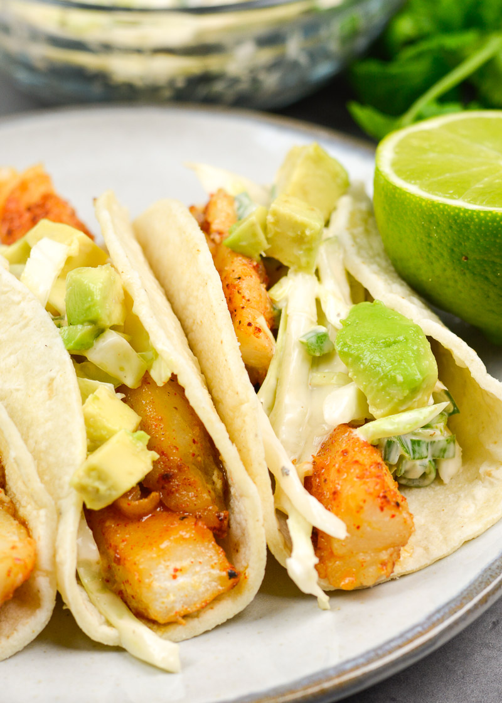

Tilapia Fish Tacos

Description
This recipe will show you how to prepare fish to use in fish tacos. It uses a couple of indgredients you probably already have and
is a very economical way to make fish tacos. I eat them with shredded cheese, lettuce, and salsa. Prepare them
however you like and enjoy.
Indgredients:
- 16oz pack of boneless, skinless tilapia fillets
- 1 packet of taco seasoning
- 1 bag of plain, salted tortilla chips
- Taco shells of your choosing
- Toppings for your tacos
Steps:
- Cut thawed tilapia fillets into small cubes no greater than 1"
- Heat oven to 375
- In a 1 gallon ziplock bag use a smooth sided mug or rolling pin to crush about 30-40 of the tortilla chips inside the bag
- Mix in the taco seasoning
- Place the cut fish into the bag a few at a time, manipulating them to ensure even coating and preventing them from sticking together
- Close and shake the bag
- Line a baking sheet with aluminum foil. Spray with non-stick baking oil
- Pour fish mixture onto the prepared baking sheet
- Cook for 8 minutes, flip the fish, then cook for another 7 minutes
- Check a few of the biggest pieces of fish for to make sure they are finished cooking by ensuring the fish is flaky when cut in half
- Serve tacos with whatever toppings you like